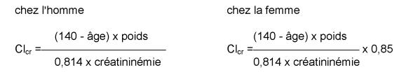

RÉSUMÉ DES CARACTÉRISTIQUES DU PRODUIT
ANSM - Mis à jour le : 13/05/2003
BUFLOMEDIL RPG 300 mg, comprimé
2. COMPOSITION QUALITATIVE ET QUANTITATIVE
Chlorhydrate de buflomédil................................................................................................. 300 mg
Pour un comprimé
Pour les excipients voir 6.1
Comprimé
4.1 Indications thérapeutiques
· Traitement symptomatique de la claudication intermittente des artériopathies chroniques oblitérantes des membres inférieurs (au stade 2).
N.B. : Cette indication repose sur des essais cliniques en double aveugle par rapport à un placebo qui montrent une augmentation du périmètre de marche d'au moins 50 pour cent chez 50 à 60 pour cent des malades traités, contre 20 à 40 pour cent des malades suivant uniquement des règles hygiéno-diététiques.
· Amélioration du phénomène de Raynaud.
4.2 Posologie et mode d'administration
2 comprimés par jour, répartis en 2 prises.
4.3 Contre-indications
Ce médicament ne doit jamais être utilisé dans les cas suivants :
· chez les patients souffrant d'épilepsie,
· en cas d'hypersensibilité ou d'intolérance au gluten, en raison de la présence d'amidon de blé (gluten).
Ce médicament ne doit généralement pas être utilisé pendant l'allaitement.
4.4 Mises en garde spéciales et précautions particulières d'emploi
Une mesure systématique du débit de filtration glomérulaire par la formule de Cockcroft est recommandée chez les sujets âgés de plus de 65 ans.
Chez les sujets âgés de plus de 65 ans, ayant une fonction rénale et/ou hépatique normale(s), la posologie sera inchangée, mais rigoureusement respectée.
En cas d'insuffisance hépatique ou d'insuffisance rénale associée(lorsque la clairance de la créatinine est inférieure à 40ml/mn*), il est recommandé de baisser la posologie maximale quotidienne de moitié, soit 2 comprimés à 150 mg par jour: 1 comprimé le matin, 1 comprimé le soir.
(*) La valeur de la clairance de la créatinine, calculée à partir de la créatininémie et ajustée sur l'âge, le poids corporel et le sexe, selon la formule de Cockcroft par exemple, reflète correctement l'état de la fonction rénale chez ce type de patient :

(avec Clcr exprimée en ml/mn, l'âge en années, le poids en kg, la créatininémie en µmol/l).
Chez l'insuffisant rénal traité par hémodialyse itérative (à raison de 3 dialyses/semaine pendant 4 semaines), il n'y a pas d'accumulation du buflomédil bien que sa dialysance soit très faible (environ 5 à 10 % de la dose extraits au cours de la dialyse). La posologie maximale quotidienne doit être de 2 comprimés à 150 mg. Les comprimés doivent être administrés après la séance de dialyse.
4.5 Interactions avec d'autres médicaments et autres formes d'interactions
Sans objet
4.6 Grossesse et allaitement
Les études chez l'animal n'ont pas mis en évidence d'effet tératogène. En l'absence d'effet tératogène chez l'animal, un effet malformatif dans l'espèce humaine n'est pas attendu. En effet, à ce jour, les substances responsables de malformations dans l'espèce humaine se sont révélées tératogènes chez l'animal au cours d'études bien conduites sur deux espèces.
En clinique, il n'existe pas actuellement de données suffisamment pertinentes pour évaluer un éventuel effet malformatif ou foetotoxique du buflomédil lorsqu'il est administré pendant la grossesse.
En conséquence, par mesure de précaution, il est préférable de ne pas utiliser le buflomédil pendant la grossesse.
Ce médicament est déconseillé en cas d'allaitement.
4.7 Effets sur l'aptitude à conduire des véhicules et à utiliser des machines
Sans objet
4.8 Effets indésirables
Les effets secondaires du buflomédil sont rares et transitoires.
Ont été observés :
· des effets secondaires digestifs tels que nausées, vomissements,
· des sensations de chaleur cutanée, des picotements des extrémités, des céphalées, des vertiges, des tremblements,
· des réactions cutanées : rash, urticaire.
4.9 Surdosage
En cas de surdosage volontaire ou accidentel, on peut observer rapidement (15 à 90 minutes) des manifestations neurologiques (convulsions, état de mal convulsif) pouvant être suivies d'une symptomatologie cardiovasculaire (en particulier tachycardie sinusale, hypotension, troubles du rythme ventriculaire graves, troubles de conduction, notamment intraventriculaire) qui peuvent évoluer vers un coma et/ou un arrêt cardiocirculatoire.
Ce tableau clinique est un tableau proche de celui d'une intoxication par antidépresseur imipraminique.
Il y a lieu de faire hospitaliser immédiatement le malade par transport médicalisé d'urgence dans un service spécialisé, afin d'instaurer une surveillance neurologique et électrocardiographique continue et de mettre en place sans délai une assistance respiratoire et le traitement de l'intoxication.
5. PROPRIÉTÉS PHARMACOLOGIQUES
5.1 Propriétés pharmacodynamiques
AUTRES VASODILATATEURS PERIPHERIQUES
(C04AX20 : système cardio-vasculaire)
L'activité vasculaire du buflomédil est liée à deux composantes pharmacologiques : un effet α 1 et α 2 adrénolytique et une action directe sur les structures myocytaires microcirculatoires :
· par son action adrénolytique α non spécifique, le buflomédil s'oppose localement aux effets vasoconstricteurs de l'adrénaline, du stress et du froid. Cette action se retrouve essentiellement au niveau des artères riches en récepteurs α : artères périphériques musculaires du circuit de distribution ;
· par son action spécifique microcirculatoire liée à un effet sur les mouvements calciques, au niveau des myocytes périvasculaires, le buflomédil ouvre les sphincters pré-capillaires spasmés et restaure donc une microcirculation musculocutanée fonctionnelle.
Chez l'animal
· L'étude microcinématographique quantitative directe sur la bajoue du hamster a montré une augmentation du diamètre des microvaisseaux de 16 à 20 % après administration locale de buflomédil.
· Le buflomédil provoque par voie intra-artérielle, intra-veineuse et intra-duodénale, une augmentation du débit fémoral mais aussi des débits cutané et musculaire avec baisse des résistances périphériques, chez le chien éveillé ou anesthésié. Cette augmentation est significativement supérieure à celles obtenues par les produits de référence.
Chez l'homme
· Les examens capillaroscopiques effectués après traitement oral ou intra-veineux de buflomédil ont montré une augmentation du nombre et de la taille des boucles capillaires et le relâchement des sphincters pré-capillaires spasmés avec accroissement de la vitesse de circulation des hématies.
· Le buflomédil, ne mobilisant pas d'importante masse sanguine, ne modifie donc pas de façon significative l'hémodynamique cardiaque (pression artérielle systolique et diastolique, fréquence cardiaque, pression d'éjection ventriculaire, débit cardiaque total et systolique, index cardiaque, travail du ventricule gauche). Ceci a été vérifié chez l'animal et chez l'homme par cathétérisme cardiaque.
5.2 Propriétés pharmacocinétiques
Le métabolisme du buflomédil a été étudié chez le rat et chez le chien par analyse physicochimique et par molécule marquée au C14, chez l'homme par mesure physicochimique, le buflomédil est absorbé rapidement au niveau intestinal, il reste essentiellement dans le plasma (chez le rat et le chien, 50 % du produit restent à l'état libre).
· La demi-vie d'élimination plasmatique est relativement courte, de l'ordre de 2 heures.
· Les vitesses d'élimination et d'échange avec le compartiment de fixation ne dépendent pas de sa voie d'administration.
· Le volume de distribution est élevé avec diffusion tissulaire importante.
· L'élimination s'effectue rapidement par voie rénale (de 6 à 18 %), mais surtout par d'autres voies métaboliques, (biliaire, etc ...).
· Chez l'insuffisant rénal sévère, la demi-vie d'élimination plasmatique est de l'ordre de 5 heures (+ 3. 4 h).
5.3 Données de sécurité précliniques
Sans objet.
6.1 Liste des excipients
Amidon de blé, cellulose microcristalline, talc, stéarate de magnésium.
6.2 Incompatibilités
Sans objet
6.3 Durée de conservation
3 ans
6.4 Précautions particulières de conservation
Pas de précautions particulières de conservation
6.5 Nature et contenu de l'emballage extérieur
10 comprimés sous plaquettes thermoformées (PVC/Aluminium)
6.6 Instructions pour l'utilisation et la manipulation et l'élimination
Pas d'exigences particulières.
7. TITULAIRE DE L'AUTORISATION DE MISE SUR LE MARCHÉ
Laboratoire RPG AVENTIS
46, quai de la Rapée
75601 PARIS CEDEX 12
8. PRÉSENTATIONS ET NUMÉROS D'IDENTIFICATION ADMINISTRATIVE
· 354 050 - 1 : 10 comprimés sous plaquettes thermoformées (PVC/Aluminium)
9. DATE DE PREMIÈRE AUTORISATION/DE RENOUVELLEMENT DE L'AUTORISATION
10. DATE DE MISE À JOUR DU TEXTE
Liste I